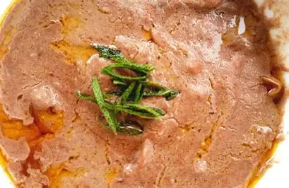

FRESH FROM THE STALL
Take a market-side pause
Look for the ingredients you’ve just met in the food guide—plantain, cassava, greens, groundnuts. Ask what’s in season and what people like to cook with it.
LISTEN
LEARN
02 / THE NEIGHBORHOOD
Kansanga is a starting point, not a checklist. Explore at your own pace: a market stop, a casual counter, a new snack, then the question “what should I try next?”
Share a food findA LOOK AROUND THE TABLE
These snapshots show foods without claiming a specific recipe or venue.

A FEW GOOD STARTING POINTS
Use these as gentle prompts, not a map to a particular vendor.
FRESH FROM THE STALL
Look for the ingredients you’ve just met in the food guide—plantain, cassava, greens, groundnuts. Ask what’s in season and what people like to cook with it.
COOKED TO ORDER
A casual eatery or roadside counter can be a good place to ask for a familiar favorite. Check what’s available that day and ask how a dish is usually served.
A SMALL ADVENTURE
Tell a host or vendor what you enjoy, mention any dietary needs, and ask for a recommendation. A shared meal often makes the best introduction.
This guide avoids unverified business listings and exact addresses. Confirm opening hours and details directly before visiting.
PASS A GOOD THING ALONG
Have a place, market corner, or food stop to recommend around Kansanga? Add a note for the next curious eater.
This form uses GET, so your note appears in the page URL. Please leave out private or sensitive details.